Graphical Abstract
Integrated Multi-Omics Dissection of LUAD
This public deck is the final portable review version of the MODA workspace: dense enough to show real evidence, but curated enough to remain GitHub-friendly and application-ready.
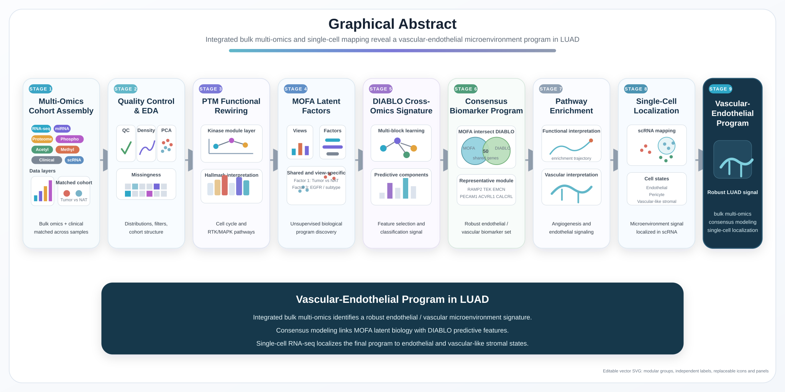
Project-level synthesis
The analysis moves from overlap-aware cohort construction and QC to functional baseline biology, unsupervised latent-factor discovery, supervised cross-omics modeling, consensus signature extraction, and final single-cell localization.
Portable deck assets are self-contained inside this public repository.
EDA
Cohort Overlap Defines What Can Be Integrated
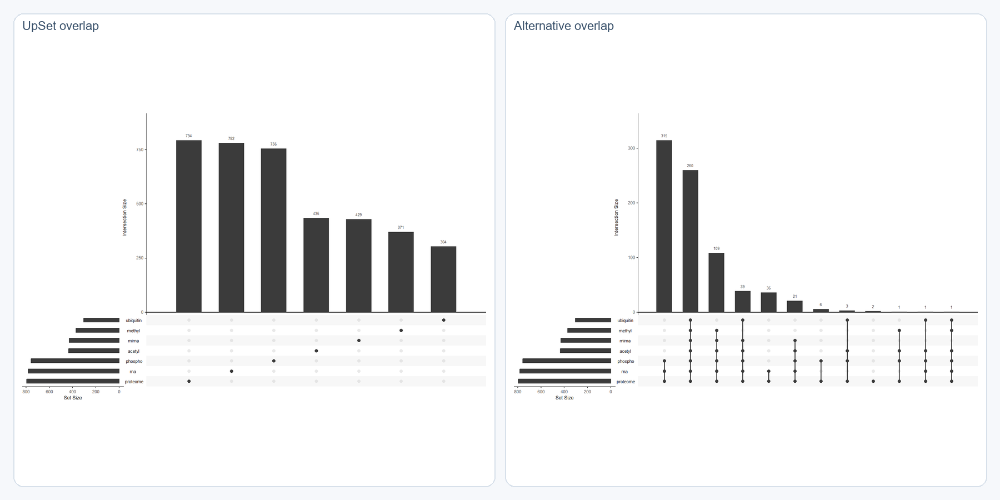
Matched-layer overlap and all-6 integration readiness
These overlap views are not decorative. They justify the cohort used in the downstream workflow and explain why the strongest integrative anchors repeatedly come from RNA, proteome, and phosphoproteome.
Interpretation
- The integrative workflow is constrained by actual layer overlap rather than assumed full coverage.
- The public narrative is centered on the strict matched 6-layer cohort because that is the fairest basis for MOFA and DIABLO comparisons.
- This overlap logic is part of the science, not just preprocessing.
EDA
Distribution and Missingness Across Four Core Layers
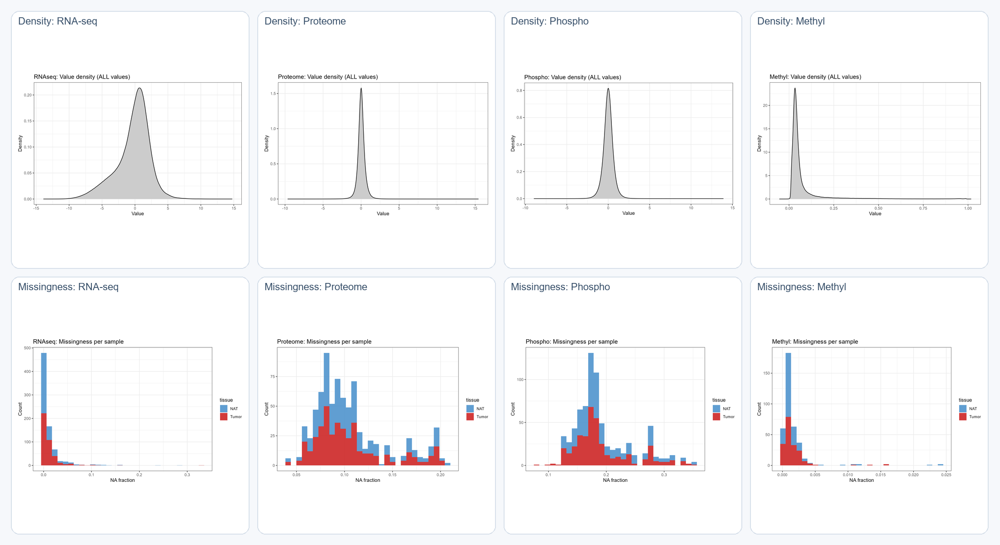
Density and missingness for RNA-seq, proteome, phosphoproteome, and methylation
This is the minimum QC block needed in public view: enough to show stable distributions and realistic sparsity constraints without collapsing into a figure warehouse.
Interpretation
- RNA-seq and proteome show favorable stability and coverage, which helps explain their repeated influence downstream.
- Phosphoproteome and methylation are informative but more constrained, so filtering and overlap-aware modeling are necessary.
- This is the evidence that the dataset is ready for integration rather than just assembled.
EDA
Pre-Integration Structure Is Already Biologically Organized
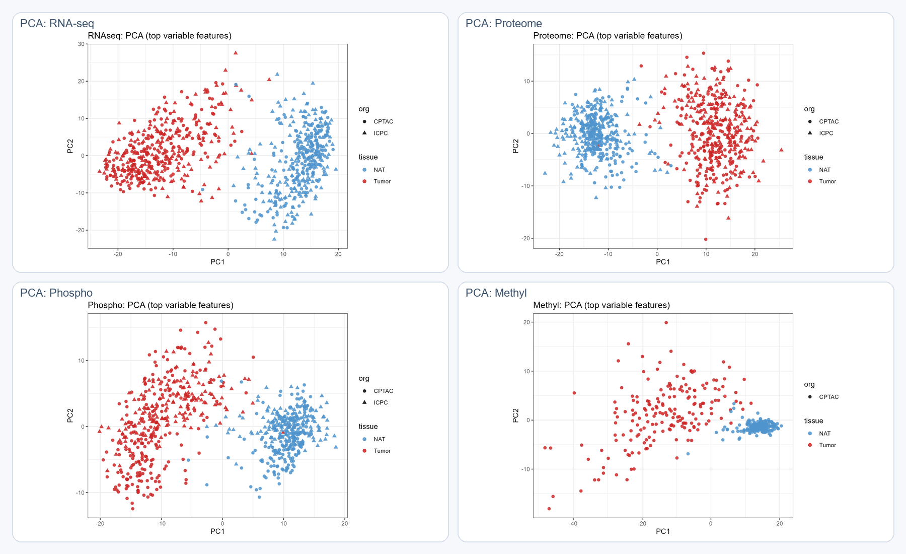
PCA across RNA-seq, proteome, phosphoproteome, and methylation
Unsupervised structure is visible before any multi-omics model is trained. That matters because it reduces the risk that later factor separation is an artifact of model choice.
Interpretation
- Major tissue-state organization is already visible across multiple layers.
- The project does not depend on one algorithm to manufacture separation.
- These PCA panels support the claim that later MOFA and DIABLO results are discovering coherent biology, not imposing it.
Clinical Context
Tissue Composition and Stage Burden
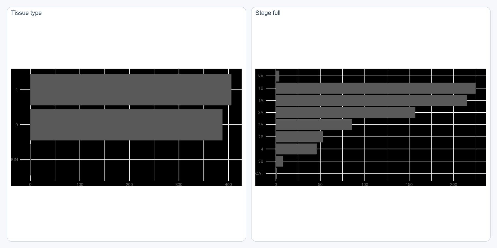
Tissue type and pathologic stage context
This first clinical slide stays focused on the variables that frame the rest of the analysis: the near-balanced Tumor/NAT design and the stage structure of the cohort.
Interpretation
- The balanced tissue composition makes Factor 1 separation scientifically meaningful rather than sample-count driven.
- Stage context matters because later phenotype-linked signals should not be read without knowing disease-burden composition.
- This is the right amount of cohort context for a public reviewer-facing deck.
Clinical Context
The Variables That Actually Matter Downstream
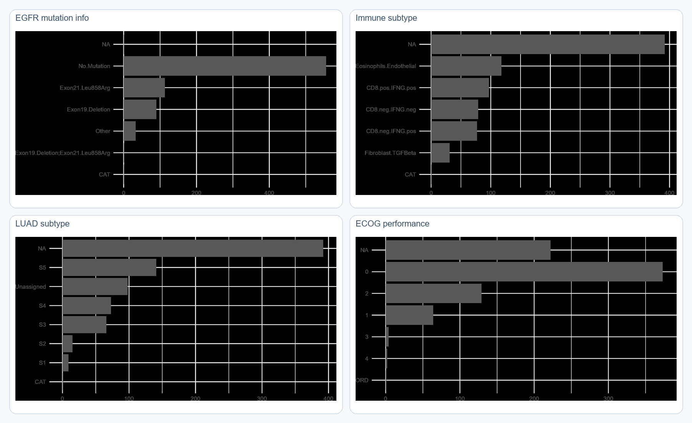
EGFR, immune subtype, LUAD subtype, and ECOG performance
These are the strongest clinical context variables for the later interpretation: EGFR and subtype for Factor 3, plus immune and patient-phenotype context that help frame how molecular structure may connect to broader disease state.
Interpretation
- EGFR and LUAD subtype justify keeping a secondary Factor 3 narrative in the deck.
- Immune subtype and ECOG performance add biologic and phenotypic context without overloading the public deck.
- Everything else from the clinical archive is deliberately excluded from the main public deck.
Functional Baseline
PTM Signaling Shows Real Tumor Biology Before Integration
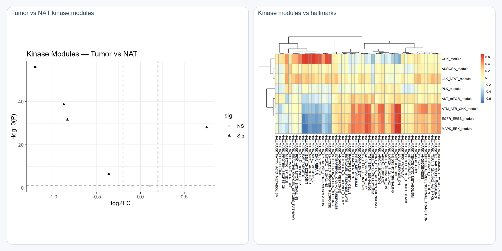
Kinase-module differential behavior and hallmark alignment
This is the functional bridge between raw measurements and interpretable biology. It shows that the dataset already contains organized pathway-level tumor signal before latent-factor or supervised models are introduced.
Interpretation
- The PTM layer supports coherent signaling rewiring rather than isolated molecular changes.
- This strengthens confidence that later multi-omics structure reflects biology with pathway context.
- It also explains why proliferative and signaling programs repeatedly reappear in later sections.
MOFA
Factor 1 Is the Dominant Axis of Shared Variation
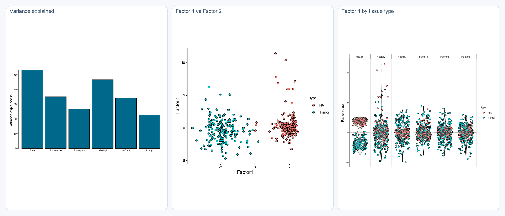
Variance explained, Factor 1 versus Factor 2, and Factor 1 by tissue type
This is the strongest latent-structure slide in the project. Factor 1 clearly behaves like a broad tissue-state axis and is not driven by a handful of outlier samples.
Interpretation
- RNA and methylation contribute strongly to the shared latent architecture.
- Factor 1 dominates tumor-versus-NAT structure and is the main unsupervised result.
- The breadth of separation makes Factor 1 much more robust than any weaker secondary factor.
MOFA
Factor 1 Resolves Into a Vascular-Endothelial Program
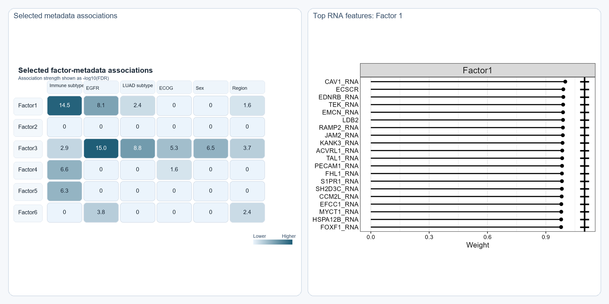
Factor-metadata relationships and top RNA features for Factor 1
The metadata heatmap and RNA loadings converge on the same interpretation: the dominant shared factor is not just generic tumor signal, but a microenvironment-rich vascular or endothelial program.
Interpretation
- Factor 1 aligns strongly with tissue state and microenvironment-related labels.
- Genes such as CAV1, TEK, PECAM1, and EMCN push the interpretation toward endothelial biology.
- This slide is the backbone of the final public-facing conclusion.
MOFA
Factor 3 Is Interesting, but It Is Not the Main Consensus Story
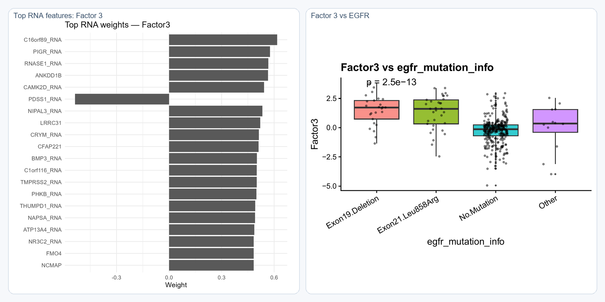
Top RNA features for Factor 3 and clinical association with EGFR status
Factor 3 carries a more phenotype-linked signal and is clearly worth reporting, but the current files do not support promoting it above Factor 1 in the final consensus narrative.
Interpretation
- Factor 3 adds nuance by capturing EGFR-related and subtype-linked biology.
- It is scientifically useful because it shows that the MOFA model is not one-dimensional.
- It remains a secondary axis because it lacks the same level of downstream consensus support.
DIABLO
Supervised Integration Captures Strong Multi-Block Discrimination
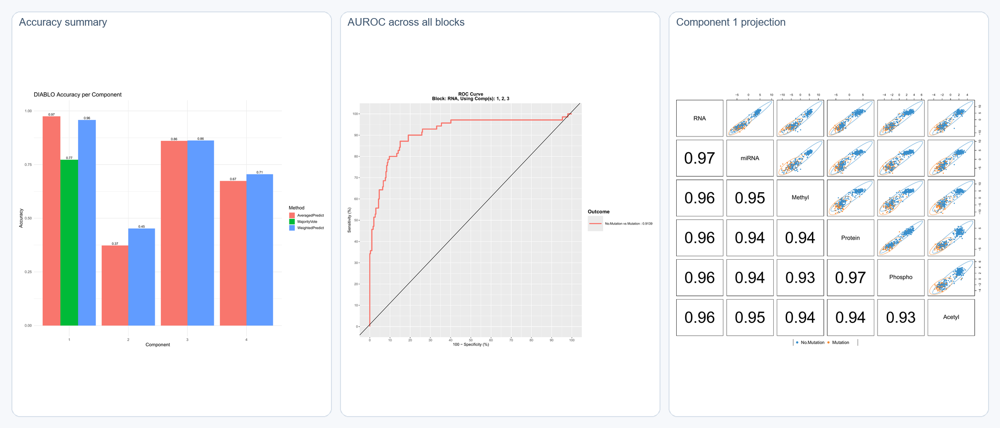
Performance summary, all-block AUROC, and primary supervised projection
The supervised model is stronger than a one-figure summary suggests. This slide shows both performance and structure, which is necessary if DIABLO is going to carry real weight in a public deck.
Interpretation
- DIABLO does capture coherent discriminative structure across blocks.
- The performance should still be interpreted cautiously because the original outcome definition is confounded by NAT samples labeled as
No.Mutation. - This section strengthens support for shared biology; it does not establish a clinically validated classifier.
DIABLO
Selected Features Behave Like a Structured Multi-Omics Program
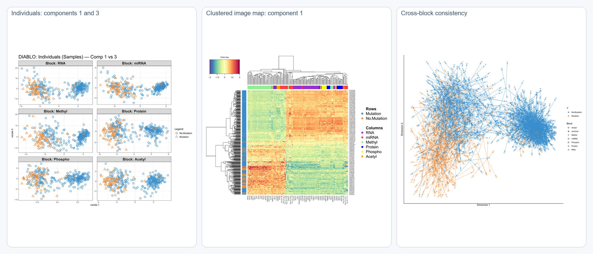
Individuals, clustered image map, and cross-block consistency
These panels are the minimum needed to show that DIABLO learned an organized cross-omics signal rather than a thin score-based separation.
Interpretation
- The individual projection confirms that supervised latent structure is not confined to a single axis.
- The clustered image map shows that selected features form coherent molecular structure.
- The arrow view supports the multi-block nature of the learned signal.
Consensus
The Robust Shared Story Is Factor 1, Not Factor 3
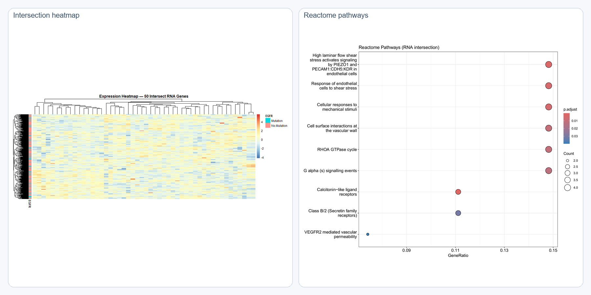
RNA intersection heatmap and Reactome pathway support
This is the strongest consensus slide in the deck. The shared gene set is not random and the pathway support is highly consistent with vascular or endothelial biology.
Interpretation
- The consensus signal centers on Factor 1 and DIABLO component 1.
- Pathway support reinforces endothelial shear-stress, vascular-wall, and permeability-related biology.
- The absence of equally strong Factor 3 overlap is part of the honest interpretation, not a weakness to hide.
scRNA Localization
The Bulk-Derived Signature Localizes to Specific Cell Types
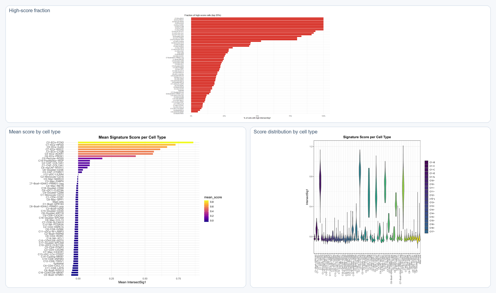
High-score fraction, mean score, and score distribution by cell type
This slide stabilizes the single-cell story by showing enrichment from more than one angle. The localization is not dependent on a single summary metric.
Interpretation
- The final intersect signature is enriched in specific cell populations rather than diffusely expressed everywhere.
- Endothelial or vascular-associated groups carry the clearest signal in the current files.
- This is strong localization evidence, though it is not external predictive validation.
scRNA Localization
The Localization Pattern Is Functionally Vascular
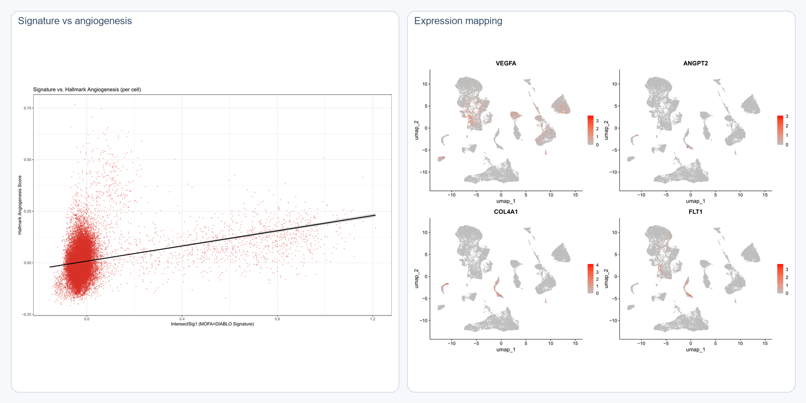
Signature-versus-angiogenesis relationship and expression mapping
The closing single-cell slide is intentionally functional rather than decorative. It links the bulk-derived signature to angiogenesis-related behavior and spatially coherent expression patterns in the scRNA landscape.
Interpretation
- The single-cell evidence supports a vascular-endothelial interpretation rather than a generic stromal label.
- The expression maps make the biology visible instead of leaving it abstract.
- This closes the full arc from matched bulk integration to cell-state localization.
Main public conclusion: the strongest reproducible program in this workspace is a vascular-endothelial microenvironment-associated LUAD signal centered on MOFA Factor 1, supported by DIABLO overlap and localized in single-cell space.